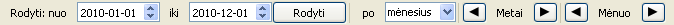
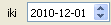
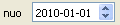
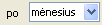
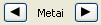
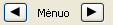

Intervalo pasirinkimo įrankių juosta
| Elementas | Aprašymas |
|---|---|
|  | Intervalo pradžios datai įvesti. |
|  | Iintervalo pabaigos datai įvesti. |
| Pasirinkto intervalo apkrovų skaičiavimo rezultatų atnaujinimui. | |
|  | Pasirinkto intervalo skaidymo tipui pasirinkti. |
|  | Atimti arba pridėti metus prie pasirinkto intervalo pradžios bei pabaigos datų |
|  | Atimti arba pridėti mėnesį prie pasirinkto intervalo pradžios bei pabaigos datų. |
Automatinis intervalų koregavimas
Sistema automatiškai koreguoja pasirinktą intervalą pagal šiuos kriterijus:
-
Intervalas turi atikti istorinių duomenų ribas. Jei kuris nors intervalo galas
išlenda už intervalo ribų, tai jis yra pastumiamas taip, kad sutaptų su turimų duomenų intervalu.
Šiai taisyklei išimtis yra dešinysis intervalo galas, kuriam leidžiama 5 metais viršyti turimų duomenų dešinįjį intervalo galą tam, kad būtų galima pamatyti apkrovų prognozes. - Intervalo galai turi atitikti pasirinktą granuliarumą. Jei kažkuris intervalo galas neatitinka pasirinkto granuliarumo, tai jis bus patumtas. Pvz. pasirinkus savaitinį granuliarumą pasirinktas intervalas visą laiką prasidės pirmadieniu, o baigsis sekmadieniu. Mėnėsinio granuliarumo atveju intervalas prasidės pirmąja mėnesio diena, o baigsis - paskutiniąja ir t.t.
Intervalų koregavimo priežastys bei pats koreguotas intervalas yra pateikiami informaciniame pranešime, kuris parodomas paspaudus mygtuką Rodyti.
Intervalų korektiškumas
Sistema priima tik korektiškus intervalus. Korektiško intervalo kriterijai:
- Intervalo pradžia turi būti anksčiau už pabaigą.
- Maksimalus koreguoto intervalo ilgis yra 10 metų
Papildoma informacija
- Pasirinkus nekorektišką intervalą, intervalų įvedimo laukų fono spalva bus pakeista į raudoną spalvą.
- Paspaudus mygtuką Rodyti, kol yra įvestas nekorektiškas intervalas, bus parodytas pranešimas su priežastimi, kodėl pasirinktas intervalas yra nekorektiškas.